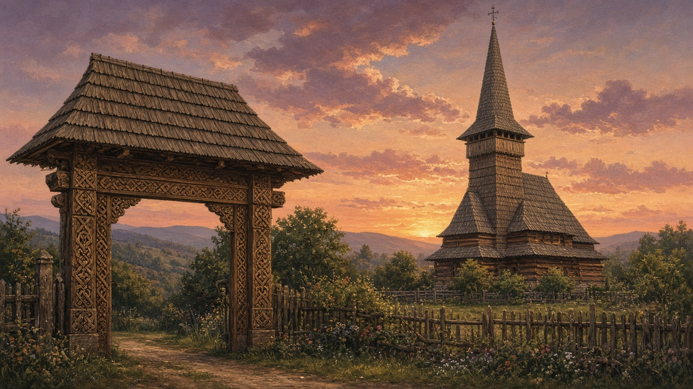

Wooden churches
In Maramureș the church is timber first: a tall shingle roof, a porch that smells of pine, and a tower that can be seen from the next hill. These are not the painted walls of Bucovina. They are a different craft, and a different skyline.

Why wood, and why so tall
Stone was scarce and expensive in the upper valleys. Oak and fir were not. They came off the slope the village already used for gates and firewood — that path is still the forest. From the seventeenth and eighteenth centuries, village communities raised churches whose roofs rise far above the nave, sometimes two or three times the height of the walls. The steep pitch sheds snow. The tower, the turn, carries the bell and the landmark. Inside, the plan is Orthodox: a porch or pronaos, a nave, and an altar behind the iconostasis. Outside, the silhouette is what you remember from the road — a dark, sharp roof against pasture and sky.
How they were built
Walls of horizontal logs, notched and locked at the corners. Roofs of split shingles, șindrilă, layered so rain runs off in sheets. Joints cut so the frame holds without a bag of iron nails, though metal appears where a hinge or a lock needs it. The carpenters were local masters, often the same hands that carved the village gate. The same hands might raise a smaller oak cross at the fork — the wayside troiță. A church like this was a communal act: timber from the commons, labor from the parish, a dedication day that still names the hram. Some of the famous ones — Bârsana, Ieud Deal, Poienile Izei, Budești Josani — are on the UNESCO list. The living point is smaller. Plenty of unmarked wooden churches still serve a Sunday liturgy in a valley that does not appear on a brochure.
What you see when you walk in
Low light, a painted iconostasis if the parish could afford the painter, and walls that may hold fresco or only bare wood and a few hung icons. The floor is boards. The air holds incense and cold resin. Women stand on one side, men on the other, in the older habit. A cemetery wraps the yard. The gate into that yard is often as worked as the church itself: rope motifs, sun disks, a short inscription asking for blessing. That gate is the same family of craft as the household poartă — those farmyard monuments have their own page, gates — only scaled to the parish. The rooms behind a farmhouse lintel sit on the house.
Not the painted monasteries
Bucovina’s exterior frescoes are brick and plaster, a public book on the wall. Maramureș wood is structure and silhouette. Both are Orthodox. Both are northern. They answer different shortages and different weather. If you only know Voroneț blue, these churches will feel quieter until you look up at the roof. Then they are loud in their own way: height, shingle, and the patience of a frame that has already outlasted several empires.
The wood on this page is the same craft named briefly under crafts. The faith that fills the nave is the same one sketched in Orthodoxy. What is particular here is the roof line of Maramureș — a village church that still looks like a ship of timber pointed at the sky.